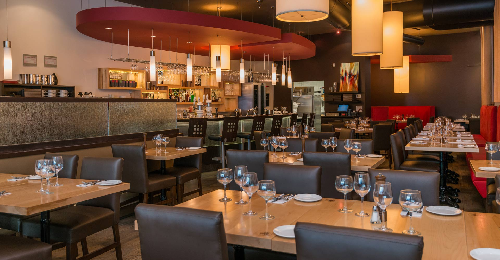

a propos
Le Restaurant Français est une brasserie traditionnelle située au cœur de Paris. Fondé en 1990, notre restaurant propose une expérience culinaire authentique de la cuisine française. Notre menu varié comprend une sélection exquise de plats français classiques, tels que les escargots, le boeuf bourguignon et les crêpes Suzette. Nous nous engageons à fournir à nos clients un service exceptionnel dans un cadre chaleureux et convivial. Notre équipe de chefs talentueux utilise des ingrédients frais et de qualité pour préparer des plats qui raviront les papilles de nos clients les plus exigeants. Venez nous rendre visite au Restaurant Français et découvrez l'essence même de la gastronomie française. Que ce soit pour un dîner romantique, une réunion d'affaires ou simplement une soirée entre amis, notre restaurant est l'endroit idéal pour savourer des plats délicieux dans une atmosphère typiquement française. |
 |

|
Évenements
Restez à l'affût de nos événements spéciaux et des occasions uniques organisées par Le Bon repas Paris ! Soirée Vin et FromageJoignez-vous à nous pour une soirée de dégustation de vins français assortis avec des fromages locaux. Découvrez les délices de la gastronomie française dans une atmosphère conviviale et détendue. Soirée Musicale: Jazz à ParisLaissez-vous emporter par les sons envoûtants du jazz français lors de notre soirée musicale. Profitez de performances live par des artistes locaux tout en savourant des plats délicieux et des cocktails raffinés. Atelier de Cuisine FrançaiseDécouvrez les secrets de la cuisine française lors de notre atelier culinaire interactif. Notre chef expérimenté vous guidera à travers la préparation de plats classiques français, vous permettant de déguster vos créations par la suite. Restez informé de nos événements à venir en consultant régulièrement notre site web ou en vous abonnant à notre newsletter. |
specialité
Découvrez nos spécialités culinaires françaises qui captiveront vos papilles et vous transporteront au cœur de la gastronomie française. Escargots de BourgogneSavourez une délicatesse française traditionnelle avec nos escargots de Bourgogne préparés avec du beurre à l'ail, du persil frais et des épices aromatiques. Une expérience gustative inoubliable ! Coq au VinPlongez dans la richesse des saveurs françaises avec notre coq au vin, un plat classique de la cuisine française préparé avec du poulet mijoté dans du vin rouge, des champignons, des oignons et des herbes. Ratatouille ProvençaleDégustez notre version de la ratatouille provençale, un plat végétarien coloré composé de légumes frais tels que les tomates, les courgettes, les poivrons, les aubergines et les herbes de Provence. Crêpes SuzetteTerminez votre repas en beauté avec nos crêpes Suzette, des crêpes fines flambées au Grand Marnier et servies avec une sauce à l'orange chaude. Une douceur irrésistible ! Explorez notre menu complet pour découvrir d'autres délices de la cuisine française, préparés avec soin par notre équipe de chefs talentueux. |

|